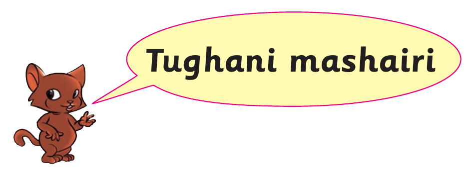
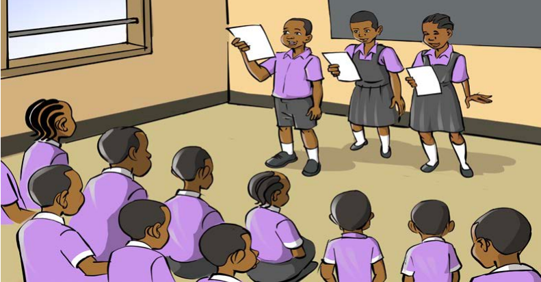

Tughani shairi la sanaa


Tughani shairi la sanaa
Karibuni karibuni, tujifunzeni sanaaHakika inavutia, yajenga taifa letuSanaa kitu kizuri, mwalimu alituasaKamwe tusije kiacha, na kitatufaa sana
Kuchora pia tuchore, tusuke na tufinyangeTucheze na ngoma zetu, nazo nyimbo tuziimbeMichezo nayo tucheze, viungo kuimarishaFuraha nayo kupata, karibuni karibuni
Hata tukiwa wakubwa, tutakuwa ni hodariSanaa tutatumia, asante mwalimu wetu